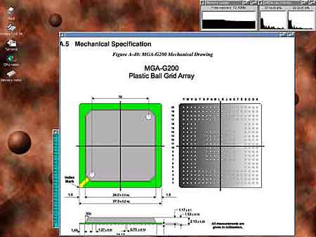
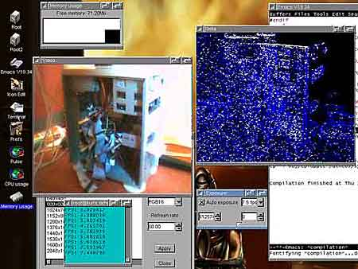
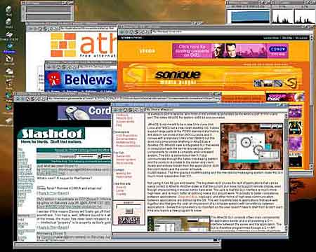
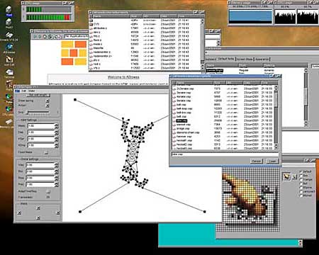

Sistema rasa
Автор: Алексей Федорчук,
[email protected]Опубликовано:
16.01.2002
Оригинал: http://www.softterra.ru/freeos/15232/
Когда речь заходит об открытых и свободных
операционных системах, обычно вспоминается Linux. Меньшей известностью, в силу
ряда причин, пользуются *BSD-клоны — Free-, Net- и OpenBSD. И уж
совсем редко упоминают о Hurd, хотя в последнее время этот проект, после долгого
периода застоя, развивается весьма активно.
Объединяет все эти системы то, что генетически
(или — парагенетически) они связаны с Unix. Так, *BSD-клоны, в
сущности, ни что иное, как Unix, очищенный от «проприетарного» Unix-кода. Linux,
исторически, — попытка воспроизведения функциональности Unix-систем,
вообще таковой код не используя. И даже Hurd, в котором декларируется отход от
принципов Unix-архаики, подчинен единой идее — сделать все, как в
Unix, но иначе — в соответствие с известным рекурсивным высказыванием
Ричарда Столлмена: GNU — GNU is Not Unix.
Возникает вопрос — все ли в мире Open
Sources прямо и непосредственно происходит от Unix? Как выясняется, не совсем. И
примером этому — некая свободная альтернативная операционная система,
названная ее создателем [1] AtheOS.
Согласно заявлению автора,
это — своего рода tabula rasa (цитирую — "new clean desktop
OS"), разработанная «с нуля». То есть — не клон Unix, в отличие от
*BSD или Linux. Она функционирует на любых Intel-совместимых процессорах
(вероятно, 32-разрядных). Правда — только на них, никаких сведений о
поддержке PPC, Alpha etc не имеется, но зато поддерживаются мультипроцессорные
архитектуры.
Отличительная особенность ОС, насколько я могу
судить — поддержка в ядре графического интерфейса пользователя,
основанного на архитектуре клиент-сервер, но отличного, тем не менее, от системы
X Window, привычной всем пользователям Unix. Вместе с тем поддерживается и
стандартный интерфейс командной строки в лице типичных Unix'овых Shell'ов. Ну и
вообще декларируется поддержка, хотя и не полная, всяческих стандартов (типа
POSIX).

Короче говоря, прочитанное на сайте вызывает
желание ознакомиться с системой вживе. Что я, выбрав толику времени, и проделал.
Разумеется, первое действо для
этого — получение системы. Единственный к тому
путь — скачивание с сайта разработчика [2]. Основной ее
комплект включает:
- образы двух загрузочных дискет (atheos-0.3.7.boot.01 и
atheos-0.3.7.boot.02 [3]);
- образ дискеты с данными, под коими имеется ввиду базовый набор компонентов
(atheos-0.3.7.data.01);
- собственно систему в виде единого архива tgz объемом около 20 Мбайт
(base-atheos-0.3.7.tgz);
- небольшую, но вполне внятную документацию, посвященную описанию
инсталляции системы (install.txt) и параметров загрузки ядра
(kernel-parameters.txt).
Кроме этого, на сайте (в отдельном каталоге)
имеется набор дополнительных пакетов (также в виде tgz-архивов), пока несколько
ограниченный, но оригинальный по подбору: средства разработки (gcc, automake и
подобные), web-сервер Apache, редактор emacs, основные Unix-утилиты типа grep,
gawk и т.д., включая даже Midnight Commander. Однако о них я скажу позднее.
Для установки системы требуется винчестер со
свободным («ненужным») разделом (или не разбитым на разделы пространством),
какой-либо носитель с файловой системой FAT (раздел диска или, например, Zip) и
три ненужные дискеты. На FAT-носитель помещается базовый файл
(base-atheos-0.3.7.tgz), на дискеты, посредством rawrite (в DOS/Windows) или dd
(в Unix/Linux), — образы загрузочных дискет и дискеты с данными.

Далее втыкаем первую загрузочную дискету в
привод, выставляем в BIOS Setup соответствующие параметры загрузки и
перезагружаемся. В процессе загрузки сначала запрашивается вторая загрузочная
дискета, а затем, после перехода в графический (VGA) режим — дискета с
данными. На экране появляется цианидово-зеленое (почти как в Windows) рабочее
поле с единственным окном терминала, в котором запущена командная среда bash
(точно такая же, как в Linux).
Все последующее — не просто, а очень
просто (подобно рекламе в бозе почившей фирмы Сэлдон [Может Сэлдом?
— Ф.С.]). Для начала в bash запускается программа DiskManager
(именно таким образом, с различением регистров) и на пустом пространстве
целевого диска выделяется раздел под родную файловую систему afs (разумеется,
если не жалко, можно уничтожить какой-либо из существующих разделов).
Программа создания разделов, как и все в этой
системе, работает в графическом режиме и весьма удобна в обращении. Нужно только
помнить, что номенклатура накопителей в AtheOS, согласно доброй утвердившейся
традиции, отличается от любой другой (принятой, например, в Linux, Free- или
OpenBSD). Так, IDE-диски маркируются, подобно Linux'у, как hda, hdb и так далее,
разделы на них — цифрами от нуля и выше.
Однако диски и прочие носители, включая zip,
именуются в порядке подключения, сначала — на основном
IDE-контроллере, потом — на дополнительном, типа FastTrack, буде
таковой случится в системе. То есть если мы имеем ситуацию (как это было в моем
случае), когда первый винчестер подключен к первому основному IDE-разъему,
Zip-привод (со вставленным носителем) — ко второму, а второй
винчестер — к первому разъему RAID'а, они получат следующие имена:
hda, hdb, hdc соответственно. Если удалить Zip-диск из привода и
перезагрузиться, оставшиеся винты будут именоваться hda и hdb, соответственно.
Это необходимо будет иметь в виду позднее, при конфигурировании загрузчика.
И еще: забегая вперед, замечу, что структура
каталогов в AtheOS значительно отличается от принятых в Unix-системах. В
частности, файлы устройств в каталоге /dev расписаны по подкаталогам (/dev/disk,
/dev/net и т.д.). Знание этого также понадобится очень скоро.
Теперь требуется собственно создать файловую
систему afs, то есть отформатировать пожертвованный ей раздел. Делается это, как
ни странно, командой format с указанием раздела в качестве аргумента, файловой
системы и (не обязательно) метки как параметров [4].
Теперь в корневом (виртуальном, разумеется)
каталоге следует создать две точки монтирования — для FAT-устройства с
базовым файлом (поскольку, как я уже сказал, размер его всего 20 Мбайт, в
качестве такового вполне подойдет zip-привод) и для afs-раздела, куда будут
помещаться файлы системы. Делается это незамысловато — командой mkdir.
Столь же своеобычно, командой mount, подмонтируем к ним требуемые нам разделы.
Остальное — прямо, без извилин:
переходим в каталог afs-раздела (опять же привычно, командой cd) и командой tar
с соответствующими опциями распаковываем туда базовый файл [5].
На этом установка AtheOS закончена, осталось
только обеспечить загрузку новообретенной системы. Собственно, это единственный
момент, который может доставить какие-либо сложности — да и том только
при нестандартном подключении накопителей [6].

Но в принципе и здесь все просто. Загрузчиком
системы по умолчанию выступает GRUB. И потому посредством стандартного
текстового редактора (в качестве коего здесь выступает jed — к счастью
или несчастью, но никакого vi нет и в помине) правится, в соответствие с
собственными реалиями, его конфигурационный файл — в момент
инсталляции он будет по адресу /afs/boot/grub/menu.lst, где
/afs/ — точка монтирования одноименной файловой системы [7]. Затем система
перезагружается (обязательно с помощью комбинации из трех пальцев, но никак не
Reset'ом) с первой дискеты и при появлении меню GRUB'а переводится в режим его
редактирования. Тут следует указать новый корневой раздел, после чего командой
setup имя диска изменения записываются в MBR (или в загрузочный сектор
afs-раздела, если какой-либо иной общий загрузчик уже используется). После
этого, вынув дискету, можно (надеюсь) нормально загрузить AtheOS.
Впрочем, если это не удастся (например, из-за
перенумерации носителей после извлечения Zip'а, как это имело место быть в моем
случае) — ничего страшного. Проходим заново полный цикл загрузки (с
трех дискет), в окне терминала подмонтируем существующий afs-раздел и вносим
должные изменения в файл menu.lst. Размонтируем для страховки afs-раздел [8], после чего
повторяем процедуру начальной загрузки и переинсталлируем GRUB заново. Ручаюсь,
со второй попытки все придет в норму…
Однако положим, что все прошло без сучка и
задоринки. И посмотрим, что же мы получили в итоге. А
заодно — проверим справедливость авторских претензий на
оригинальность.
После загрузки AtheOS система практически
мгновенно переходит в графический режим (текстовый, как я понял, ей по закону не
положен) и предлагает авторизоваться — по первости это можно сделать
от лица root'а или пользователя quest (в обоих случаях — с
одноименными паролями по умолчанию; в дальнейшем их, разумеется, можно изменить,
как и создать новых пользователей).

А потом перед глазами возникает тот же циановый
рабочий стол с сиротливо приютившимися слева пиктограммами для запуска программ:
файлового менеджера, браузера, терминала, утилиты настройки (Prefs) и
пары-тройки системных мониторов (загрузки CPU и памяти). Запускаются эти
программы двойным щелчком мыши; впрочем, никакие щелчки мышью на рабочем поле
последствий не возымеют… Правда, поддерживается скроллинг для мышей с колесиком.
Выход из графического режима не предусмотрен.
Можно только перезапустить рабочий стол или пользовательский сеанс (некоторыми
вариантами команды kill). Ну а выход из системы — все теми же тремя
пальцами.
Скриншоты, конечно, выглядят превосходно, но
штатный набор приложений беден не только количественно, но и функционально.
Браузер позволяет худо-бедно просматривать html-страницы (с замечательной
быстротой, но не самым удобным образом), файловый, с позволения сказать
менеджер — перемещаться по дереву каталогов (прочих функций управления
файлами пока не просматривается). Конечно, можно дополнительно установить
Midnight Commander, но и он выглядит как-то не «фитикультяписто».
К слову — установка дополнительных
пакетов осуществляется в два приема: сначала пакет распаковывается из архива
стандартными tar и (или) gzip, а потом регистрируется в базе данным утилитой
pkgmanager (можно предположить, что в дальнейшем это планируется производить в
одно касание, как в FreeBSD, например).
В отличие от всех прочих Unix-подобных систем,
дополнительные пакеты устанавливаются каждый в свой подкаталог каталога /usr, а
не раскидывают свои файлы по древу многочисленных bin'ов, lib'ов и прочих
man'ов. Лучше это или хуже — судить не возьмусь, но для пользователя
Windows — по крайней мере привычней.
Что еще остается добавить? Утилита Prefs
позволяет настроить разрешение экрана и глубину цвета, выбрать экранные шрифты
(в качестве системных используются шрифты True Type) и раскладку
клавиатуры — они представлены для большинства европейских языков, хотя
русского среди них нет. Нет и кириллических экранных шрифтов. Однако, как ни
странно, при лазании по дереву каталогов обнаруживается русская locale.
Это вселяет надежду, что кириллизация
AtheOS — задача не безнадежная. Правда, формат файлов клавиатурных
раскладок остался для меня непонятным, но, вероятно, при веской мотивации
разобраться в этом можно. А ttf-шрифты в какой-либо кириллической кодировке
можно просто переписать в соответствующий каталог.
Правда, я не уверен, что пока в этом есть
потребность. В нынешнем своем виде AtheOS не может рассматриваться как
всамделишняя ОС для практической деятельности (впрочем, судя по номеру текущей
версии, она на то и не претендует). Однако вызывает она чувство
симпатии — своей быстротой и компактностью, большей привычностью
структуры каталогов. И не исключено, что со временем она разовьется в
полноценную систему. Вот тогда и придет черед ее русификации.
Что же касается утверждения автора об отсутствии
связи AtheOS с Unix что — же, он постарался, чтобы его систему нельзя
было бы спутать с Linux или FreeBSD. Однако несомненно, что идеологически он
следовал именно пути Unix, а не, скажем, традициям DOS или Windows…
Вниманию вебмастеров: использование данной статьи возможно
только в соответствии
с правилами использования
материалов сайта «Софтерра»
(http://www.softerra.ru/site/rules/)